📘 Norma de referencia para estructuras de acero: UNE-EN 1993-1-1:2013 (Eurocódigo 3, Parte 1-1: reglas generales).
Cuando una fuerza externa actúa sobre una estructura, aparecen esfuerzos internos en sus elementos. Conocer qué tipo de esfuerzo soporta cada pieza es clave para entender cómo trabaja la estructura y qué puede fallar.
| Esfuerzo | Definición | Símbolo / unidad | Elemento representativo |
|---|---|---|---|
| Tracción | Esfuerzo que se produce cuando dos fuerzas iguales y de sentidos opuestos tienden a aumentar la longitud del elemento (esfuerzo axial). | N o kN (axial +) | Barras inferiores de una cercha; tirantes |
| Compresión | Esfuerzo que se produce cuando dos fuerzas iguales y de sentidos opuestos tienden a disminuir la longitud del elemento (esfuerzo axial). | N o kN (axial −) | Pilares, columnas; barras superiores de una cercha |
| Cortante | Esfuerzo que se produce cuando dos fuerzas paralelas y de sentido contrario, aplicadas en secciones próximas, tienden a cortar el elemento. | V(x) en kN | Vigas en general; especialmente junto a los apoyos |
| Flexión | Esfuerzo que se produce cuando fuerzas perpendiculares al eje provocan el curvado del elemento, generando tracción y compresión simultáneamente. | M(x) en kN·m | Vigas biapoyadas y en ménsula; dintel de un pórtico |
| Torsión | Esfuerzo que se produce cuando pares de fuerzas opuestas tienden a hacer girar la sección alrededor de su eje longitudinal. | T en kN·m | Ejes de transmisión (no se desarrolla en este bloque) |
| Pandeo | Fenómeno que se produce cuando un elemento comprimido esbelto pierde estabilidad y se deforma lateralmente al superar la carga crítica. | Fcr (carga crítica) | Pilares esbeltos (tratamiento descriptivo) |
En una viga horizontal con cargas verticales, al hacer un corte imaginario en x y aislar la parte izquierda, el equilibrio requiere dos esfuerzos internos:
| Esfuerzo interno | Qué equilibra | Cómo se calcula |
|---|---|---|
| Cortante V(x) | Resultante de todas las fuerzas verticales a la izquierda del corte | V(x) = ΣFy (izquierda del corte), positivo si ↑ |
| Momento flector M(x) | Momento de todas las fuerzas a la izquierda respecto al punto de corte | M(x) = ΣM en x (izquierda), positivo si «sonríe» (concavidad arriba) |
Consecuencias directas para leer los diagramas:
Una estructura es un conjunto de elementos que trabajan conjuntamente para transmitir las cargas externas hasta el terreno sin colapsar ni deformarse en exceso. El saber básico TECI.2.C.1 distingue dos grandes ámbitos:
| Elemento | Descripción | Esfuerzo principal | Ejemplo real |
|---|---|---|---|
| Pilar / Columna | Elemento vertical que transmite las cargas de las vigas a la cimentación | Compresión axial | Pilares de un edificio, columnas de un puente |
| Viga | Elemento horizontal que salva un vano. Protagonista de este bloque | Flexión + cortante | Vigas de forjado, tablero de un puente, dintel |
| Pórtico | Conjunto de pilares y vigas unidos rígidamente en sus nodos | Flexión + cortante + axial | Nave industrial, marco de acero |
| Cercha | Estructura triangulada de barras articuladas. Cada barra trabaja solo a tracción o compresión pura | Tracción o compresión axial | Cubierta de pabellón, puente en celosía |
| Chasis / bastidor / bancada | Estructuras soporte de máquinas. Análisis estático equivalente al de pórticos | Combinación de esfuerzos según el equipo soportado | Chasis de coche, bastidor de bicicleta, bancada de un torno |
| Tipo de apoyo | Reacciones | Grados de libertad impedidos |
|---|---|---|
| Articulado fijo | Rx (horizontal) + Ry (vertical) — 2 reacciones | Desplazamiento horizontal y vertical. Permite el giro. |
| Articulado móvil (rodillo) | Ry (solo perpendicular) — 1 reacción | Solo desplazamiento perpendicular. Permite giro y despl. horizontal. |
| Empotramiento | Rx + Ry + M — 3 reacciones | Desplazamiento horizontal, vertical y giro. No permite ningún movimiento. |
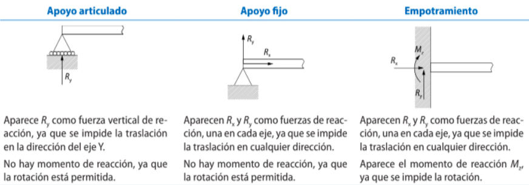
(fuerzas horizontales) (fuerzas verticales) (momentos respecto a P)
Una vez determinadas las reacciones, se calculan los diagramas de esfuerzos internos a lo largo de la viga. Se realiza un corte en una sección genérica a distancia x del origen y se aplica equilibrio al tramo izquierdo.
→ El momento flector alcanza un extremo (máximo o mínimo) donde el cortante se anula.
→ La pendiente del diagrama de cortante coincide con la carga aplicada. M(x) se obtiene integrando V(x).
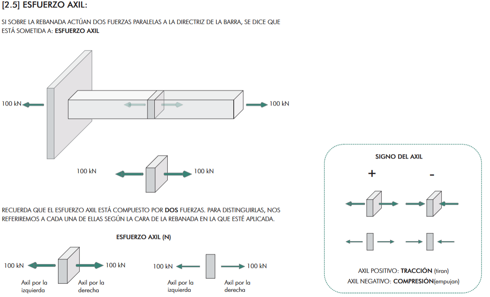
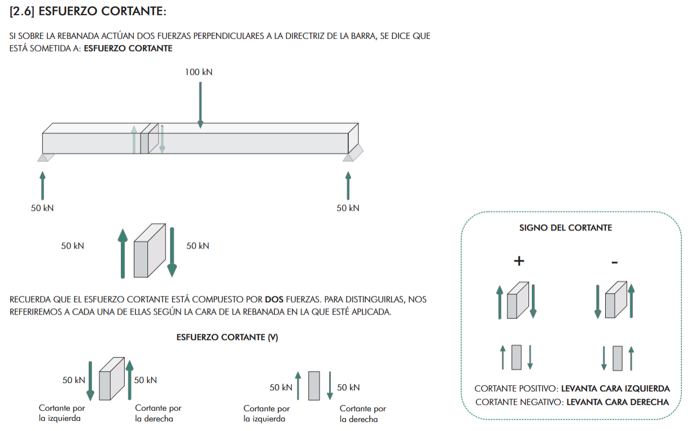
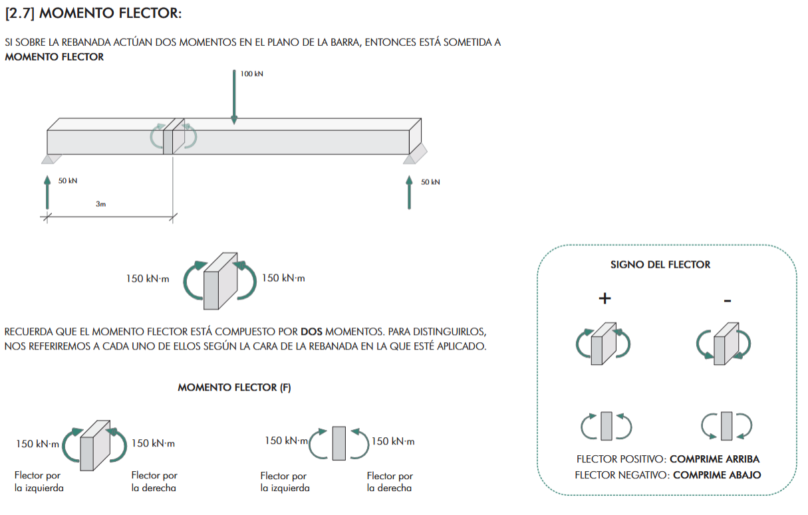
El método de las secciones permite calcular V(x) y M(x) en cualquier punto de una viga isostática. Se basa en que si la estructura está en equilibrio, cualquier parte de ella también lo está.
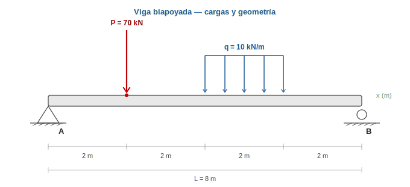
Sustituimos la carga distribuida por su resultante:
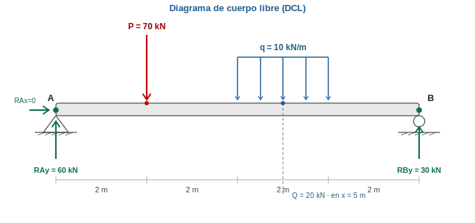
Los cambios de carga en x = 2, 4 y 6 m definen cuatro tramos:
| Sección | Rango | Cargas en el trozo izquierdo |
|---|---|---|
| 1 | 0 ≤ x ≤ 2 m | Solo RAy = 60 kN |
| 2 | 2 ≤ x ≤ 4 m | RAy y P = 70 kN |
| 3 | 4 ≤ x ≤ 6 m | RAy, P y q = 10 kN/m (parcial desde x = 4) |
| 4 | 6 ≤ x ≤ 8 m | RAy, P y Q = 20 kN (resultante completa en x = 5) |
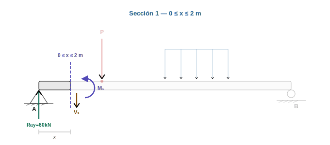
| Equilibrio vertical | Momentos en el corte |
|---|---|
| ΣFy = 0 60 − V₁ = 0 → V₁ = 60 kN | ΣMcorte = 0 −60·x + M₁ = 0 → M₁ = 60x |
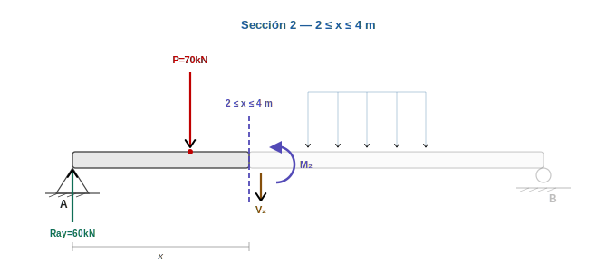
| Equilibrio vertical | Momentos en el corte |
|---|---|
| ΣFy = 0 60 − 70 − V₂ = 0 → V₂ = −10 kN | ΣMcorte = 0 −60x + 70(x−2) + M₂ = 0 → M₂ = −10x + 140 |
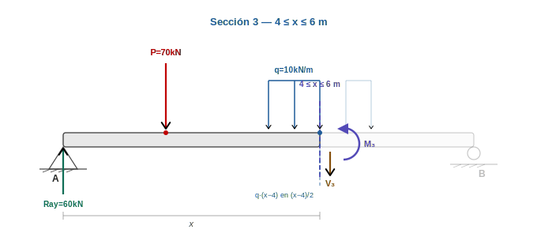
| Equilibrio vertical | Momentos en el corte |
|---|---|
| ΣFy = 0 60−70−10(x−4)−V₃=0 V₃ = −10−10(x−4) kN | ΣMcorte = 0 M₃ = 60x−70(x−2)−5(x−4)² M₃ = −10x+140−5(x−4)² kN·m |
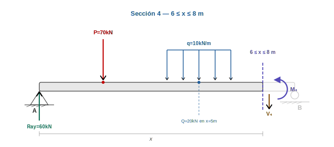
| Equilibrio vertical | Momentos en el corte |
|---|---|
| ΣFy = 0 60−70−20−V₄ = 0 V₄ = −30 kN | ΣMcorte = 0 M₄ = 60x−70(x−2)−20(x−5) M₄ = 240−30x kN·m |
| Sección | Rango (m) | V(x) (kN) | M(x) (kN·m) |
|---|---|---|---|
| 1 | 0 ≤ x ≤ 2 | +60 | 60x |
| 2 | 2 ≤ x ≤ 4 | −10 | −10x + 140 |
| 3 | 4 ≤ x ≤ 6 | −10 − 10(x−4) | −10x+140−5(x−4)² |
| 4 | 6 ≤ x ≤ 8 | −30 | 240 − 30x |
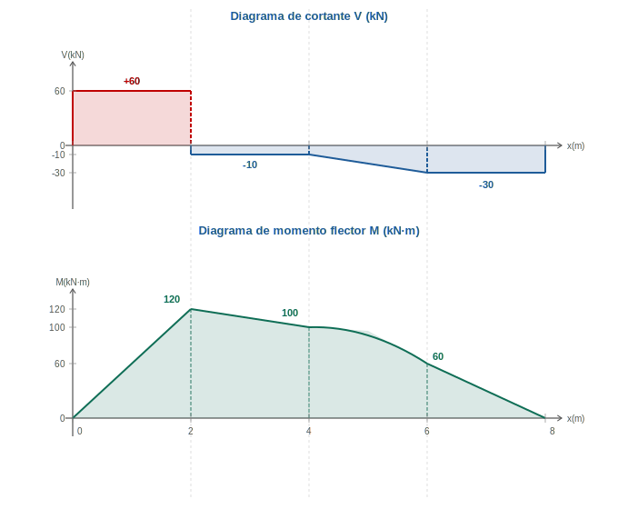
| Si V(x) > 0 | Si V(x) < 0 | Si V(x) = 0 |
|---|---|---|
| M(x) CRECE La pendiente del diagrama de M es positiva |
M(x) DECRECE La pendiente del diagrama de M es negativa |
M(x) tiene un EXTREMO Máximo o mínimo del momento flector |
→ Esta regla permite comprobar rápidamente si los diagramas V y M son coherentes entre sí, y localizar Mmáx sin necesidad de derivar.
Tramo 1: d(60x)/dx = 60 = V₁ ✔ · Tramo 2: d(−10x+140)/dx = −10 = V₂ ✔
Tramo 3: d(−10x+140−5(x−4)²)/dx = −10−10(x−4) = V₃ ✔ · Tramo 4: d(240−30x)/dx = −30 = V₄ ✔
| Característica | Viga biapoyada | Viga en ménsula |
|---|---|---|
| Apoyos | Articulado fijo + rodillo | Empotramiento en un extremo; el otro libre |
| Reacciones | RAx, RAy, RBy | RAx, RAy, MA |
| M en los extremos | M = 0 en ambos extremos | M = 0 en extremo libre · M = Mmáx en empotramiento |
| Signo de M(x) | Positivo (+) — «sonrisa» | Negativo (−) — «llora» |
| Posición de Mmáx | Donde V(x) = 0 (bajo la carga) | Siempre en el empotramiento |
| Forma de V(x) | Escalón: positivo en un tramo, negativo en otro | Constante negativo (con una sola carga puntual) |
| Forma de M(x) | Triángulo con vértice en la carga | Triángulo negativo creciente desde 0 hasta MB |
Una cercha (o celosía plana) es una estructura formada por barras rectas unidas en los extremos mediante articulaciones (los nudos), dispuestas en forma de triángulos. Las cargas se aplican únicamente en los nudos, de modo que cada barra trabaja a tracción o compresión pura, sin flexión.
Son las estructuras ideales cuando se necesita cubrir grandes luces con poco peso: puentes metálicos, cubiertas industriales, naves agrícolas, torres de alta tensión, grúas, la Torre Eiffel o los hangares de aviones.
Para analizar una cercha plana se admiten las siguientes hipótesis ideales, que simplifican enormemente los cálculos:
Una cercha sólo se puede resolver por las ecuaciones de la Estática si es isostática (tantas incógnitas como ecuaciones de equilibrio disponibles).
Isostaticidad exterior. La estructura necesita 3 reacciones independientes (p. ej. apoyo fijo + rodillo). Si tiene menos es inestable; si tiene más es hiperestática y se necesita mecánica de materiales.
Isostaticidad interior. Para una cercha plana con \(n\) nudos y \(b\) barras se cumple:
Si \(b > 2n-3\) la cercha es internamente hiperestática; si \(b < 2n-3\) es un mecanismo (inestable).
Se plantea el equilibrio de cada nudo como si fuera una partícula. En cada nudo sólo hay dos ecuaciones útiles:
Convenio de signos. Se dibuja siempre la fuerza saliendo del nudo a lo largo de la barra. Si al resolver sale positivo, la barra está a tracción (tira del nudo). Si sale negativo, está a compresión (empuja al nudo).
Ejemplo resuelto — cercha triangular equilátera. Cercha de 4 m de luz, equilátera, con carga vertical P = 1000 N en el nudo C (vértice superior). Apoyo fijo en A, rodillo en B.
Paso 1 · Reacciones. Por simetría (carga centrada, apoyos equidistantes):
Paso 2 · Nudo A (dos incógnitas: \(T_{AC}\) y \(T_{AB}\)). La barra AC forma 60° con la horizontal.
De la segunda ecuación:
Y sustituyendo en la primera:
Paso 3 · Nudo B. Por simetría directa: \(T_{BC} = T_{AC} = -577{,}35\ \text{N}\) (compresión).
Paso 4 · Nudo C (verificación). Debe dar \(\sum F_x = 0\) y \(\sum F_y = 0\) automáticamente, ya que no hay nuevas incógnitas.
Si sólo interesan las tensiones de tres barras concretas, no hace falta recorrer toda la cercha nudo a nudo: se hace un corte imaginario que atraviese esas tres barras, se separa la cercha en dos trozos y se aplica el equilibrio a uno de ellos.
Como cada trozo tiene tres ecuaciones de equilibrio en el plano (\(\sum F_x=0\), \(\sum F_y=0\), \(\sum M=0\)), se pueden resolver hasta 3 incógnitas simultáneamente. De ahí la regla: el corte no debe atravesar más de tres barras.
Pasos.
Ejemplo resuelto — cercha Howe de 4 paneles. Cuerda inferior de 12 m (4 tramos de 3 m); altura 3 m; nudos inferiores L0-L1-L2-L3-L4 y superiores U1-U2-U3. Cargas verticales de 2 000 N en cada nudo superior. Apoyo fijo en L0, rodillo en L4. Se piden las tensiones en las barras \(U_1 U_2\), \(U_1 L_2\) y \(L_1 L_2\) mediante un único corte.
Paso 1 · Reacciones. Simetría: \(R_A = R_B = \frac{3P}{2} = 3\,000\ \text{N}\).
Paso 2 · Trozo izquierdo (nudos L0, L1, U1). Actúan: \(R_{Ay} = 3\,000\ \text{N}\uparrow\) en L0, y \(P = 2\,000\ \text{N}\downarrow\) en U1. Las tres barras cortadas quedan sustituidas por tensiones axiales \(T_{U_1 U_2}\) (horizontal), \(T_{U_1 L_2}\) (diagonal de U1 a L2) y \(T_{L_1 L_2}\) (horizontal).
Paso 3 · Momento respecto de U1 (elimina \(T_{U_1 U_2}\) y \(T_{U_1 L_2}\), que pasan ambas por U1). Coordenadas: \(U_1=(3,3)\), \(L_0=(0,0)\), \(L_2=(6,0)\). La barra \(L_1 L_2\) es horizontal; aplicamos su tensión en \(L_2\) dirigida hacia +x (tracción):
Positivo: la cuerda inferior trabaja a tracción.
Paso 4 · Momento respecto de L2 (elimina \(T_{L_1 L_2}\) y \(T_{U_1 L_2}\)). Aplicamos \(T_{U_1 U_2}\) en U1 dirigida hacia +x:
Con los brazos y signos correctos:
Negativo: la cuerda superior trabaja a compresión.
Paso 5 · Equilibrio vertical del trozo para la diagonal \(T_{U_1 L_2}\). Dirección U1→L2 = (+3, –3), componente vertical \(-\tfrac{1}{\sqrt 2}\):
Positivo: la diagonal trabaja a tracción.
| Barra | Tensión (N) | Naturaleza |
|---|---|---|
| U1U2 | −4 000 | Compresión |
| U1L2 | +1 414,21 | Tracción |
| L1L2 | +3 000 | Tracción |
El diagrama de Cremona resuelve la cercha entera construyendo un único polígono de fuerzas cerrado para toda la estructura. Es un método gráfico, elegante y rápido, que fue el preferido en la ingeniería civil del siglo XX antes de los ordenadores.
Notación de Bow. Cada región del plano (las zonas que quedan entre las barras y entre las fuerzas exteriores) se etiqueta con una letra mayúscula. Cada fuerza (externa o interna) se denota por las dos letras de las regiones que separa.
Pasos.
Ejemplo resuelto — cercha pendolón con carga en el nudo inferior central. Nudos A(0,0), B(4,0) en la base; C(2,2) en el vértice; D(2,0) en el centro de la base. Barras AC, BC, AD, DB, CD. Carga P = 10 kN aplicada verticalmente hacia abajo en D (la cercha soporta un peso suspendido del centro). Apoyo fijo en A, rodillo en B.
Paso 1 · Reacciones. Simetría: \(R_{Ay} = R_{By} = 5\ \text{kN}\), \(R_{Ax} = 0\).
Paso 2 · Polígono de fuerzas externas. A escala 1 cm = 2 kN se dibujan en secuencia: \(R_{Ay}\) (↑, 2,5 cm), la carga P (↓, 5 cm) y \(R_{By}\) (↑, 2,5 cm). Como las tres son verticales y colineales y la suma vectorial cierra, el polígono externo degenera en un segmento. A los puntos los llamamos 0 → 1 → 2 → 0.
Paso 3 · Nudo A (dos incógnitas, \(T_{AC}\) a 45° y \(T_{AD}\) horizontal). Desde el punto "0" del diagrama se traza una recta paralela a AC y desde el punto "1" una paralela a AD. Su intersección fija el punto "3".
Paso 4 · Nudo D. La barra CD es vertical y absorbe íntegramente la carga \(P\) transmitida desde el nudo inferior:
Paso 5 · Nudo B. Por simetría: \(T_{BC} = -7{,}071\ \text{kN}\) (compresión), \(T_{BD} = +5{,}000\ \text{kN}\) (tracción).
Paso 6 · Verificación en nudo C. Proyectando en vertical:
| Barra | Tensión (kN) | Naturaleza |
|---|---|---|
| AC | −7,07 | Compresión |
| BC | −7,07 | Compresión |
| AD | +5,00 | Tracción |
| DB | +5,00 | Tracción |
| CD | +10,00 | Tracción (pendolón) |
Modelo de solución para que el alumnado vea el recorrido completo desde el esquema hasta la interpretación del diagrama de esfuerzos.
| Comprobación | Qué debe cumplirse |
|---|---|
| Equilibrio vertical | Reacciones hacia arriba = cargas hacia abajo. |
| Equilibrio de momentos | La suma de momentos respecto a cualquier punto debe anularse. |
| Diagrama de cortante | Solo hay saltos donde hay fuerzas puntuales. |
| Diagrama de momentos | La pendiente del momento coincide con el cortante. |
5 preguntas tipo PAU. Pulsa la opción que consideres correcta y se mostrará la respuesta.
1. En una viga isostática, las incógnitas se calculan con:
2. Un apoyo articulado fijo aporta:
3. Bajo una carga puntual, el cortante V(x):
4. El momento flector máximo en una viga biapoyada con carga puntual centrada se localiza en:
5. La relación entre cortante y momento flector es:
Para cerrar la parte de vigas se añade una comprobación sistemática de coherencia. Sirve para detectar errores de signo, unidades y planteamiento antes de dar por terminado un problema.
| Comprobación | Qué revisar | Error que evita |
|---|---|---|
| Diagrama de cuerpo libre | Todos los apoyos sustituidos por reacciones y todas las cargas con posición. | Olvidar una reacción o una distancia. |
| Equilibrio global | ΣFx=0, ΣFy=0 y ΣM=0 si procede. | Reacciones incompatibles con las cargas. |
| Tramos | Cortar solo donde cambia la carga o aparece una reacción. | Usar una expresión única donde no vale. |
| Cortante | Salto en cargas puntuales y valor constante entre cargas si no hay carga distribuida. | Diagrama V incoherente. |
| Momento | La pendiente de M coincide con V. | Máximos mal localizados. |